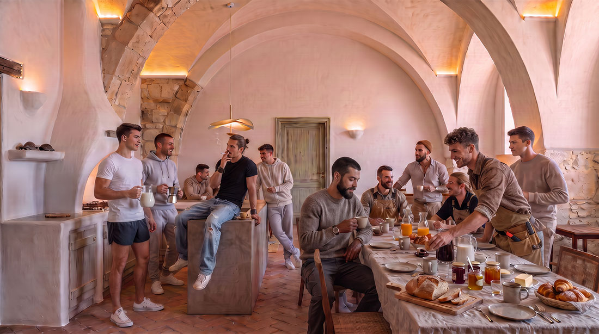
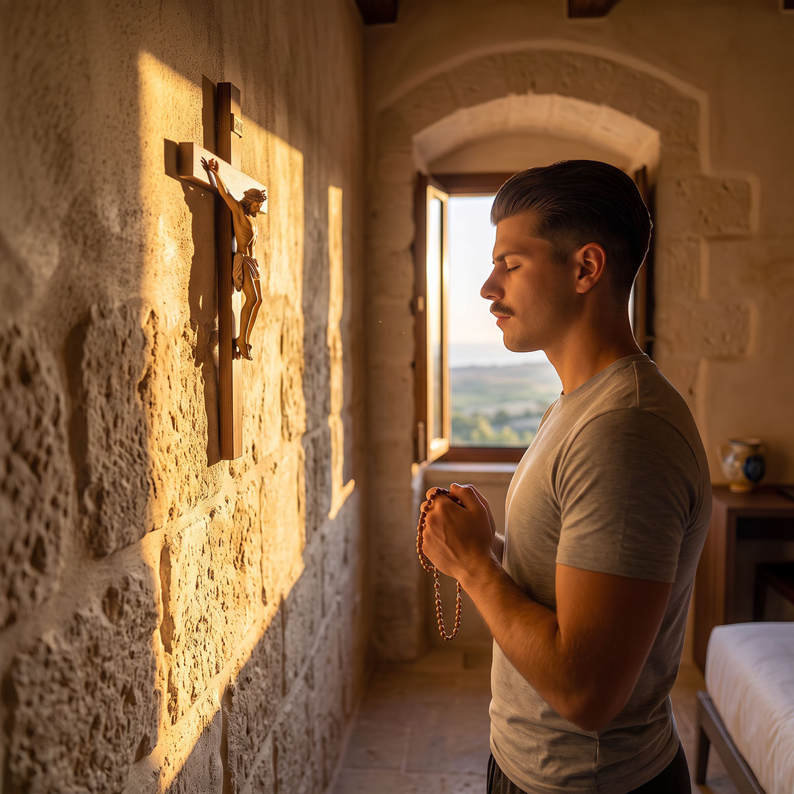
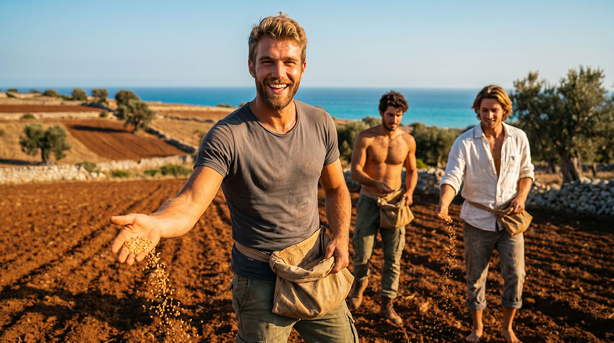
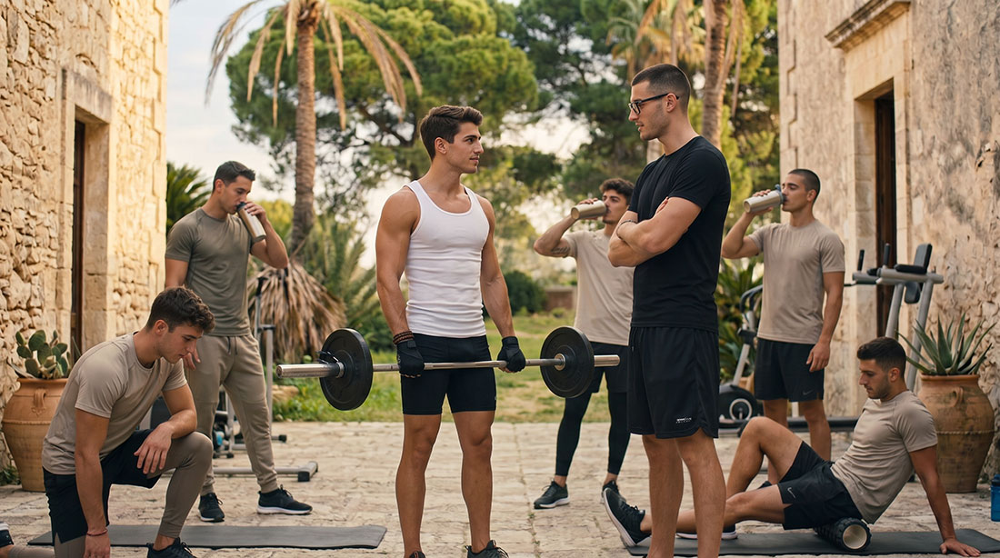
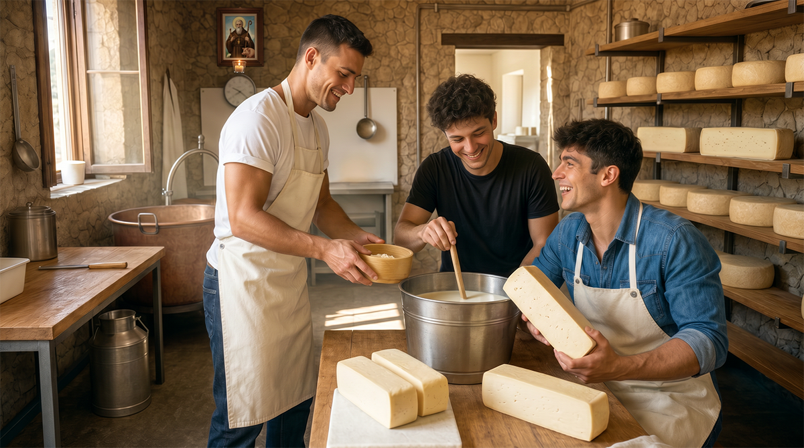
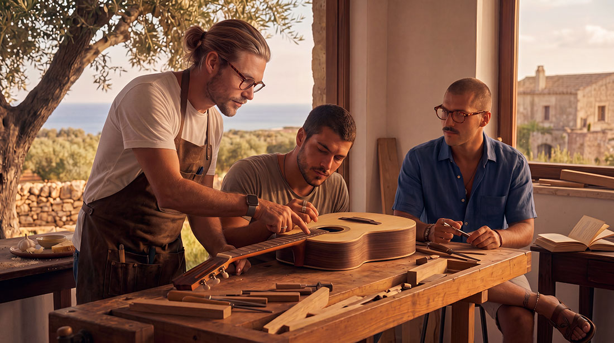
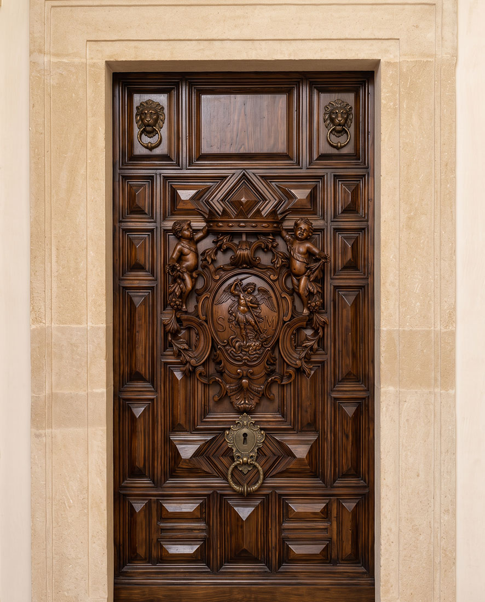
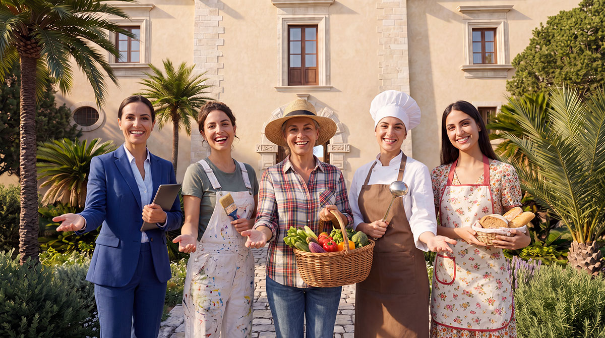

Baglio San Michele is not a convent, nor a tourist village, nor an indistinct commune. It is a traditional intentional community — ordered and serene — designed so that different people — singles and families — can live together authentically, respecting the specific needs of each season of life.
We have chosen to organise the community in two distinct and complementary sections. This division is not a separation, but a form of practical intelligence and respect: it allows each person to live with greater clarity and freedom, and makes the whole Baglio more stable, more beautiful and more attractive.
The harmony we seek is expressed in three inseparable dimensions: a clear and ordered mind, a strong and disciplined body, a soul open to grace. Mens sana in corpore sano et in anima sancta. It is not a slogan. It is the concrete rhythm of the life we propose.
The Singles Section

The singles — predominantly young men — live in individual cells, sober and comfortable personal spaces that guarantee privacy and rest. Next to the cells are the common areas: kitchen and refectory, laundry, bathrooms and showers, Finnish sauna and Turkish bath, gym, study and reading rooms.
The life of the singles is accompanied by a soft rule. It is not a monastic rule, nor a military discipline. It is a clear, human and shared rhythm, designed to foster interior order, authentic fraternity and harmonious growth. Those who live here do not renounce their freedom: they learn to exercise it with maturity.
The soft rule: a rhythm of ordered freedom

Prayer and spiritual life
The day begins with personal morning prayer, in the silence of one’s own room. Every morning the Baglio chaplain celebrates Mass; those who wish may attend. On Sundays and feast days Mass is of obligation. The Rosary remains a free and personal commitment, as does frequent confession, made possible by the presence of a priest. Sunday Vespers with Eucharistic Benediction are a community moment of particular beauty and revive an ancient tradition.

Work and sharing
Work — agricultural, artisanal or of service — occupies the central part of the day. We work together, learn from one another, put to use what we know and acquire what we do not yet know. The main meals are shared in the refectory or, on fine days, outdoors. Kitchen, cleaning and common-space duties are organised in an equitable and light way, without rigidity.

Sport and bodily discipline
Sport has a privileged place. Calisthenics, grappling, wrestling and judo are not mere recreational activities: they are instruments for the formation of body and character. Through controlled physical effort one learns self-control, resilience, respect for the opponent and a serene self-confidence. The body is educated so that it may serve a lucid mind and a soul in the grace of God.

Evening and spaces of freedom
Evening is a time for relaxation, rest, reading, conversation or study. Each person keeps spaces of personal freedom or spends time with others. The soft rule does not claim to fill every moment: it offers a solid framework within which each person can balance social life and privacy. One watches a good film, works together on a theatrical piece, plays table football, organises an evening with neighbours and friends from the area.
Why a soft rule? Because a clear structure, when proposed with respect and without rigidity, becomes an instrument of freedom. It helps to overcome dispersion, to cultivate continuity and to grow in an integral way. It takes nothing away: it restores order, direction and joy. The horizon we propose is that expressed by the motto mens sana in corpore sano et in anima sancta: a lucid and ordered mind, a strong and disciplined body, a soul capable of receiving grace. Three dimensions that nourish one another and that, together, form a man capable of standing upright, of working, of loving and of serving.
Why is the singles section reserved for men?
We have chosen to dedicate the singles section to young men because the modes of growth, of community life and of character formation are not the same for men and women. Respecting these differences seems to us the most authentic way of caring for each person.
A male environment of work, fraternity and discipline allows young men to form themselves freely and serenely, without the dynamics that would naturally arise in a mixed group.
When concrete and motivated requests arrive from young women who wish to live in community among themselves — with their own spaces and their own rhythms — we will be glad to evaluate the opening of a parallel women’s section. Until then, the singles section remains a space designed for men.
What the singles do at the Baglio
Here one does not “pass the time”. One works, learns, builds. The singles of the Baglio take an active part in the productive and artisanal life of the community. Each brings his own skills and, at the same time, acquires concrete knowledge that makes him more autonomous and more of a man.

Agriculture and the land
Vegetable gardens, olive groves, vineyards, orchards, harvesting, soil care, regenerative agriculture practices. Direct contact with the earth forms the body and the attention.

Animal husbandry and pastoral care
Care of animals, management of the poultry yard, small livestock, production of cheese and honey. Concrete responsibility towards living creatures.

Craft workshops
Cabinet-making, blacksmithing, stucco, ceramics, bookbinding, tailoring, restoration. The ancient crafts return to life and form the hand and the eye.

Services and maintenance
Plumbing, electricity, masonry, cooking, logistics, care of common spaces. Everything needed for the community to function with order and beauty.
To explore the professional roles sought and concrete opportunities for work and formation:
A typical day

- 6:00 Rising (breakfast until 8:00)
- 6:30 Mass (optional on weekdays, of obligation on Sundays and feast days)
- 8:00 Start of work or study
- 12:30 Shared lunch
- 13:00–14:00 Free time
- 14:00–19:00 Work, study, sport
- 20:00 Dinner
- 20:00–22:00 Free time, reading, social life
- 22:00 Prayer, silence
Indicative times: rural life and the seasons require flexibility, as do any social commitments with the local community. On Sundays and holy days of obligation Mass is sung at 10:00 and Vespers are celebrated at 17:30. In Lent, instead of Vespers, Compline is sung at 19:00.
Ready to take the next step?
If you are on a path of personal formation and are looking for a concrete place where you can work, form yourself and grow in order and freedom, the first step is a get-to-know-you conversation. No immediate commitment: only the possibility of looking one another in the eye and understanding whether this path can be yours.
The Families Section

Families live in autonomous apartments, larger and complete with all necessary services. Each family has its own kitchen, its own bathrooms, its own space of intimacy. Next to the apartment there is a small vegetable garden, a garden and, where possible, a cultivable plot of land.
This autonomy is not isolation. Families are fully part of the community: they may share meals, collaborate in agricultural and artisanal work, take part in community moments and celebrations. They remain free, however, to organise their own day according to the needs of the children, work and domestic life.
Why this greater independence? Because the family needs space to breathe, to educate its children, to live its own intimacy without the pressure of a continuous community rule. The serenity of a family is also built on respect for its autonomy. Only in this way can it become, for the whole Baglio, a point of stability, generosity and intergenerational transmission.
The rhythm of a family’s day
There is no imposed timetable: each family organises its own day autonomously. Yet the life of the Baglio offers certain shared fixed points that families can freely draw upon:
- Morning: daily Mass remains open to those who wish to attend with their children, before or after home schooling.
- Daytime: the common spaces (gardens, workshops, craft shops) are also accessible to parents who wish to work alongside their children or contribute part-time to the productive life of the Baglio, without the obligations of the soft rule.
- Afternoon: spaces for children — courtyard, farmyard, small common library — allow the little ones to play together under the shared supervision of the families present, in a context where children grow up knowing one another from an early age.
- Evening: on Sundays and feast days, Vespers and community moments (shared meals, vigils, liturgical feasts) naturally involve the families who wish to take part.

Education and transmission
Children are at the centre of life at the Baglio. Families who wish may organise forms of shared home schooling among several family units, also drawing on the artisanal and agricultural skills present in the community: a child grows up seeing the land, wood and wool being worked — not only a screen. The transmission of knowledge between generations, and not only between parents and children, is one of the founding aims of the project.

The role of women in the community
Women — wives, mothers, but also professionals and craftswomen in their own right — are an active and non-peripheral part of life at the Baglio: in the management of the craft workshops, in agriculture, in the care of common spaces, in the education of the children of the whole community and not only of their own, in the liturgical and cultural life. The Chapter of the Wise welcomes among its members also women who have given proof of responsibility and dedication to the community. As the project grows, we intend to develop dedicated paths and spaces also for women who desire an autonomous formative journey, on the model of the one already active for the singles.
Why this division

The choice of two distinct sections arises from a simple and realistic observation: the needs of a young single and those of a family with children are not the same. Imposing the same regime of life on everyone would generate frustration. Respecting the differences generates harmony.
The singles find in the soft rule a structure that supports and forms them. Families find in autonomy the space necessary to raise their children and live their own intimacy. By separating the two ways of life, the Baglio allows each to receive what they most need, without one limiting the other.
At the same time, the two sections complete and help each other. The singles bring energy, labour, protection and a climate of youth. Families bring stability, rootedness, intergenerational transmission and the beauty of family life. Together they form a richer, more complete and more resilient community.
An invitation to enter
This organisation is not an ideology. It is an architecture of life designed so that people can be well and grow. If you are a young single looking for order, fraternity, concrete work and an authentic path of growth, here you find a clear, stimulating and human space. If you are a family looking for a beautiful, safe and rooted place, here you find autonomy and community at the same time.
Baglio San Michele does not ask anyone to renounce themselves. It simply proposes entering a rhythm of life that is more ordered, more true and more full: mens sana in corpore sano et in anima sancta. Two ways of living that do not exclude each other, but support each other. Two sections that, together, form one community.